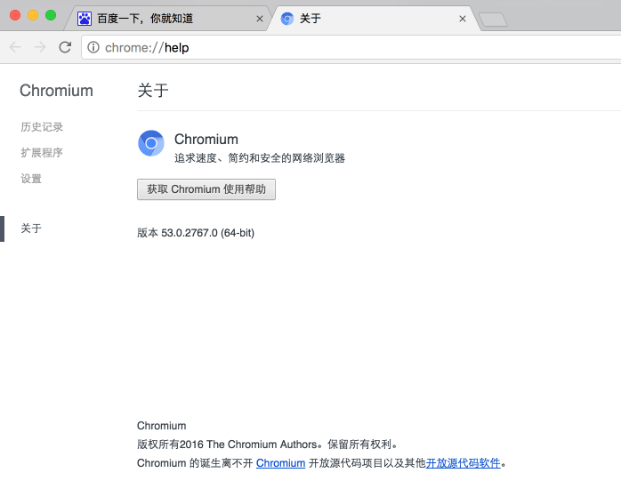
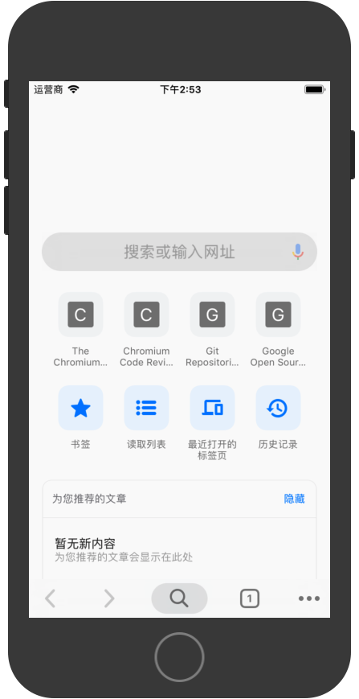

mac下载编译chromium源码
此文章来自网络。由于按照官方的教程没有成功编译iOS版，而按此文章成功编译，特此记录，原文链接
安装depot_tools工具
获取depot_tools工具
1 | git clone https://chromium.googlesource.com/chromium/tools/depot_tools.git |
添加环境变量
把depot_tools工具路径添加到系统的环境变量，~/.bashrc or ~/.zshrc。
1 | export PATH=$PATH:/path/to/depot_tools |
获取chromium源码
1 | mkdir chromium |
--no-history参数可以不下载以往的历史信息。
如果网络中断了，输入gclient sync继续下载。
获取依赖：
1 | gclient runhooks |
更新代码：
1 | git rebase-update |
编译chromium源码
1 | GYP_DEFINES=mac_sdk=10.11（可选） |
最新使用gn用于生成ninja文件，gn gen out/Default。
问题：
1 | Traceback (most recent call last): |
解决：
1 | pip install pyobjc |
运行chromiun
编译完成后会在out/Release下生成Chromium.app，直接运行：

编译iOS平台
为了编译成iOS平台的版本，可以直接把本地存在的Mac checkout转成iOS checkout，只要在chromium/.gclient文件的最后加一行target_os = [“ios”]
这里使用gn生成ninja文件(按照官方的教程，正是缺少此处)：
1 | gn args out/Debug-iphonesimulator |
写入内容：
1 | # Set to true if you have a valid code signing key. |
最后执行：
1 | gclient sync |
编译：
这里有点不一样，可以先尝试：
1 | autoninja -C out/Debug-iphonesimulator gn_all |
or
1 | ninja -C out/Debug-iphonesimulator All |
运行测试app（机型是iPhone 6,系统iOS 12.1）:
1 | out/Debug-iphonesimulator/iossim -d "iPhone 6" -s 12.1 out/Debug-iphonesimulator/Chromium.app |
成功

单个模块
1 | ninja -C out/Debug-iphonesimulator net |
1 | export GYP_GENERATORS=xcode-ninja |